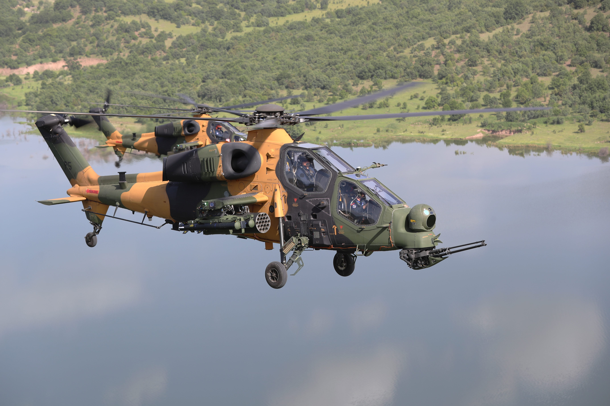
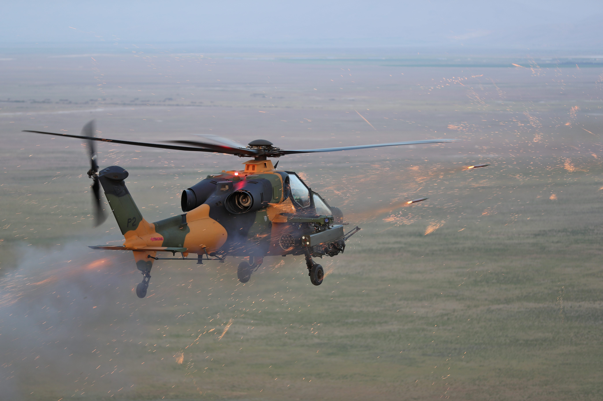

Genel Bilgi
T129 ATAK, Türk Silahlı Kuvvetlerinin taarruz helikopteri ihtiyacını karşılamak amacıyla geliştirilen, Türk Havacılık ve Uzay Sanayii (TUSAŞ) ana yükleniciliğinde üretilen modern bir taarruz helikopteridir. Platform; gece ve gündüz görev yapabilme, yüksek manevra kabiliyeti, sıcak hava ve yüksek irtifa koşullarında etkili performans sağlamak üzere optimize edilmiştir.
T129 ATAK’ın görev ve silah sistemleri millî kabiliyetlerle geliştirilmiş olup, taarruz, silahlı keşif, silahlı eskort, derin taarruz, hassas vuruş, ateş desteği, hava savunma baskısı ve şehir içi güvenlik görevlerinde kullanılabilecek çok rollü bir helikopterdir.
Platform, düşük görünürlük, düşük ses ve radar izi, asimetrik silah yükü taşıyabilme ve yüksek beka özellikleriyle sınıfındaki en etkili taarruz helikopterlerinden biri olarak öne çıkar.



Teknik Özellikler
| Platform Sınıfı | Taarruz ve taktik keşif helikopteri |
| Üretici | TUSAŞ / Turkish Aerospace |
| Program Rolü | Taarruz, silahlı keşif, silahlı eskort, hassas vuruş, ateş desteği |
| Mürettebat | 2 |
| Uzunluk | 14.54 m |
| Yükseklik | 3.40 m |
| Ana Rotor Çapı | 11.90 m |
| Azami Kalkış Ağırlığı (MTOW) | 5065 kg |
| Motor Sayısı | 2 |
| Motor Tipi | LHTEC CTS800-4A turboşaft |
| Kalkış Gücü | 2 × 1024 kW / 2 × 1373 shp |
| Azami Seyir Hızı | 281 km/s |
| Menzil | 537 km |
| Havada Kalış | 3 saat |
| HIGE Tavanı | 4572 m / 15000 ft |
| HOGE Tavanı | 4221 m / 13850 ft |
| Tırmanma Oranı | 13.26 m/sn |
| Dikey Tırmanma Oranı | 7.3 m/sn |
| Servis Tavanı | 4572 m / 15000 ft |
| Optimizasyon | Sıcak hava / yüksek irtifa görevleri için optimize edilmiş performans |
| Uçuş Koşulları | Gece ve gündüz görev yapabilme |
| Manevra Kabiliyeti | Yüksek manevra kabiliyeti |
| Görünürlük Özellikleri | Düşük görünürlük, düşük ses ve radar izi |
| Beka Özellikleri | Yüksek darbe dayanımı ve balistik tolerans |
| Elektronik Harp | Radar Warning Receiver, Radar Frequency Mixer, Laser Receiver, Missile Warning ve Countermeasure sistemleri |
| Karşı Tedbirler | IR karşı tedbir ve karşı tedbir atım sistemi |
| Kaska Sistemi | HUNTER Kaska Entegre Kumanda Sistemi |
| Top Sistemi | 20 mm taretli top |
| Top Mühimmatı | 500 mermi |
| Tanksavar Füzesi | 8 × UMTAS / L-UMTAS |
| Lazer Güdümlü Füze | 16 × 70 mm CİRİT |
| Hava-Hava Füzesi | 8 × STINGER |
| Roket Konfigürasyonu 1 | 76 × 70 mm klasik roket |
| Roket Konfigürasyonu 2 | 48 × 70 mm klasik roket |
| Silah Yükleme Özelliği | Asimetrik silah yükü taşıyabilme |
| Ek Yakıt Tankı | Haricî yardımcı yakıt tankı entegrasyonu |
| Ana Görev Rolleri | Attack, Armed Reconnaissance, Armed Escort, Deep Strike, Precision Strike, Fire Support, SEAD, Security / Urban Warfare |
| Öne Çıkan Özellik | Sınıfında sıcak hava-yüksek irtifa performansı ve çok rollü silah yüküyle öne çıkan modern taarruz helikopteri |